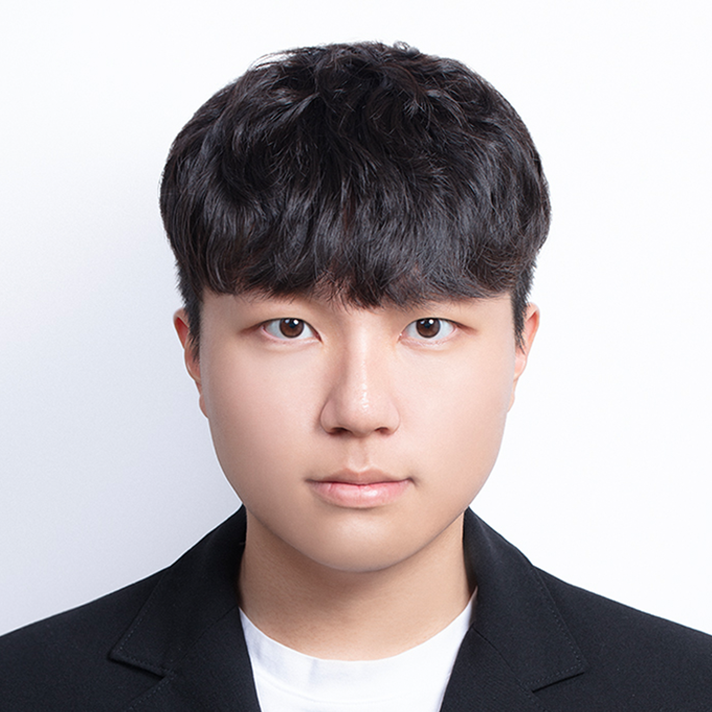

|
Eunseob Choi
I am an undergraduate student at Gwangju Institute of Science and Technology (GIST), majoring in Electrical Engineering and Computer Science. I am currently an Artificial Intelligence Intern at JB Woori Capital.
I am interested in computer vision, generative and foundation models, and medical image reconstruction. My research explores physics-informed deep learning and efficient sequence modeling for accelerated MRI/CT reconstruction, with a focus on native 3D volumetric k-space learning and self-supervised pretraining strategies that bridge the gap between data-driven priors and the underlying imaging physics.
I'm always open to discussions and collaborations. Feel free to reach out!
E-mail: eunseob.kr [at] gmail.com
Scholar /
Github /
Linkedin
|

|
GRAVEX: GPU-accelerated GAN‑Diffusion Representation for Counterfeit Pattern Analysis with MONAI-based Validation & Examination
Kyeonghun Kim, Eunseob Choi, Junsu Lim, Induk Um, Ken Ying-Kai Liao, Hyuk-jae Lee
NVIDIA GTC, 2026 (Poster)
|
GLARE: GPU-Accelerated 3D CT Vision-Language Reasoning via Efficient Anatomical Boundary Guidance
Youngung Han, Junsu Lim, Eunseob Choi, Soo Yong Kim, Yi Kwan Ginny Wong, Nam-Joon Kim
NVIDIA GTC, 2026 (Poster)
|
Hybrid Behavior Classification System and Method Combining Lightweight Edge Pose Estimation and Server Deep Analysis Based on 2D Monocular Images
Korean Patent Application No. 10-2025-082086-3 (under examination)
|
|
Gwangju Institute of Science and Technology (GIST) — B.S. in Electrical Engineering and Computer Science Mar. 2024 – Present
GPA: 4.08 / 4.5
Seoul National University — Exchange Student, Dept. of Electrical and Computer Engineering Aug. 2025 – Dec. 2025
University of California, Berkeley — Summer Session Exchange Student Jun. 2025 – Aug. 2025
GPA: 4.0 / 4.0
|
|
{kind=link}